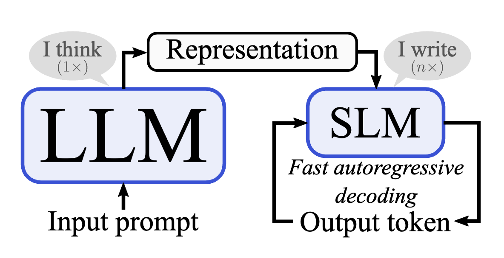
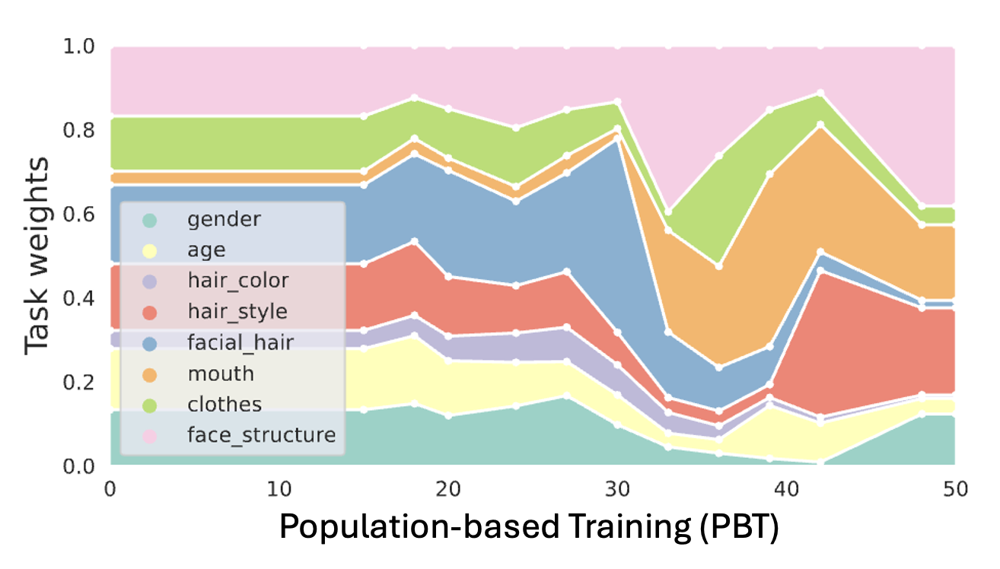
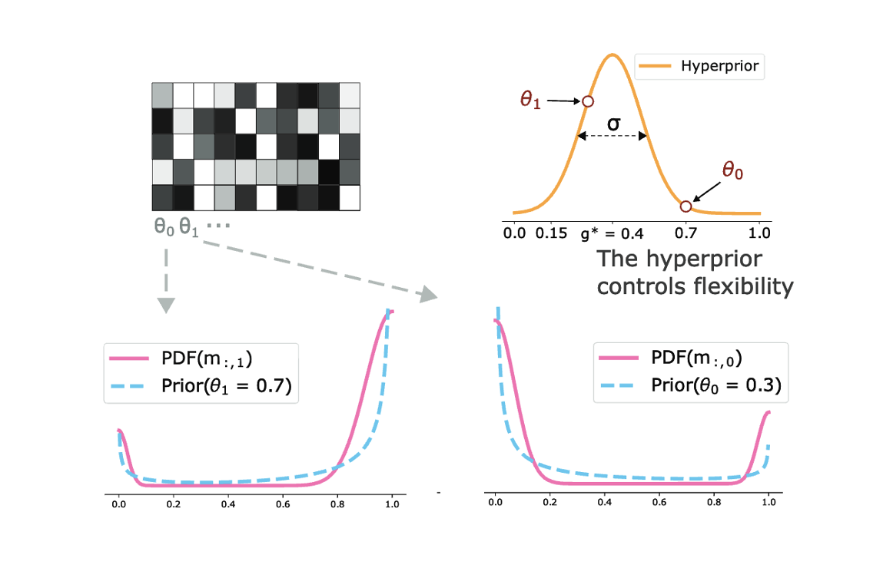
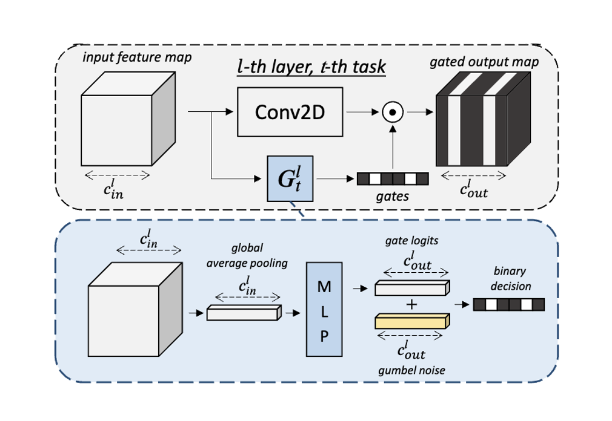

Research Projects

InterroGate for MTL
Published @BMVC'24
Learning to share, specialize, and prune representations for Multi-task Learning.
Multi-task Learning
Inference efficiency
Gated Networks
Channel sparsity

Scalarization for MTL
Published @NeurIPS'23
Scalarization for Multi-Task and Multi-Domain Learning at scale.
Population-based Training
Scalarization
Multi-Task Learning
Multi-Domain Learning

Single-gated MoE
Published @BMVC'22
Single-gate Mixture of Experts (MoE) with early exiting for convolutional architectures.
MoE
Anytime Inference
On-device
Early-exiting

Channel Gating for Continual Learning
Published @CVPR'20 (Oral)
Conditional channel gated networks for task-aware continual learning.
Continual Learning
Chanel-Gating
Task-aware
Dynamic sparsity